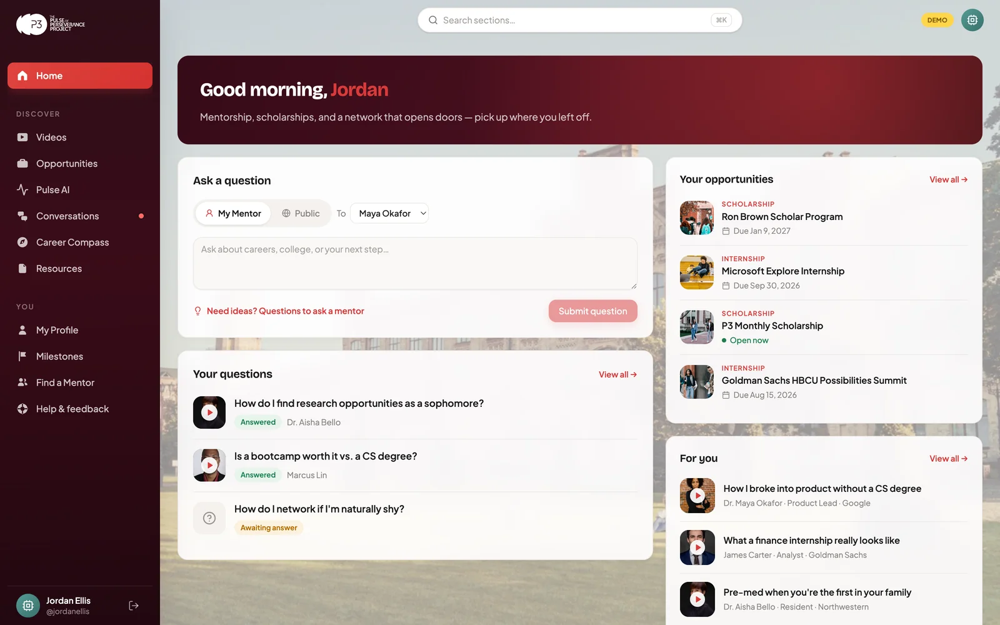
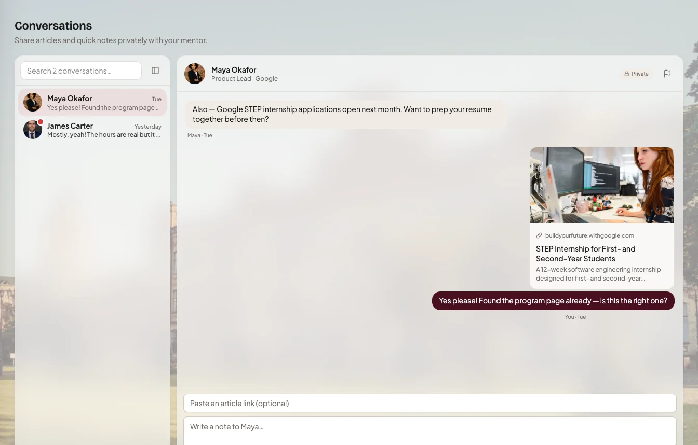
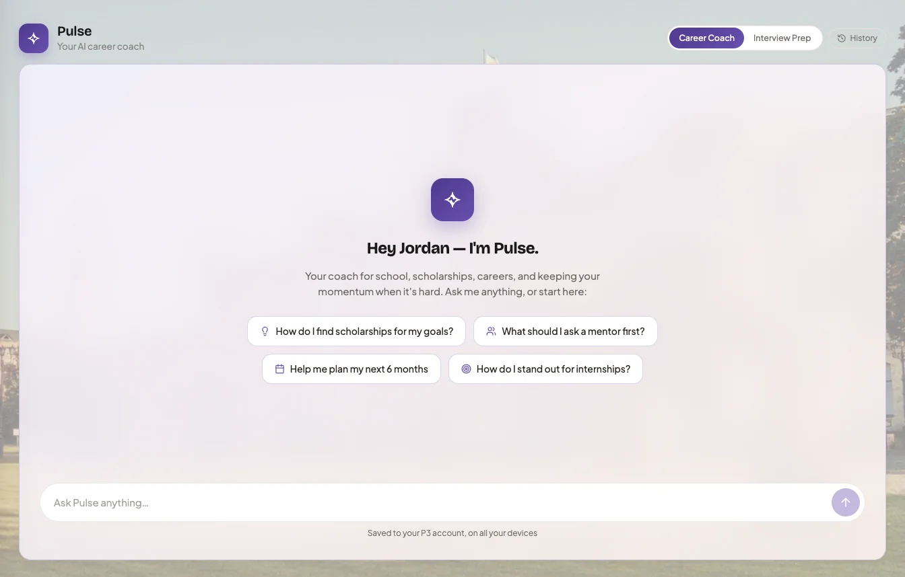
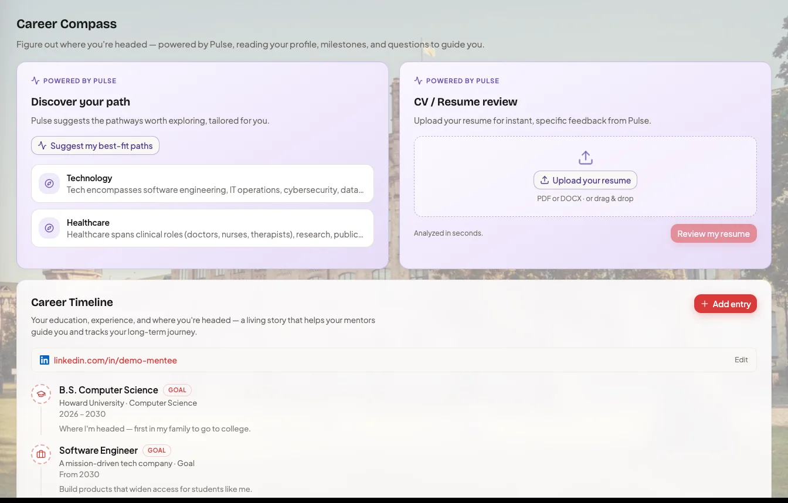
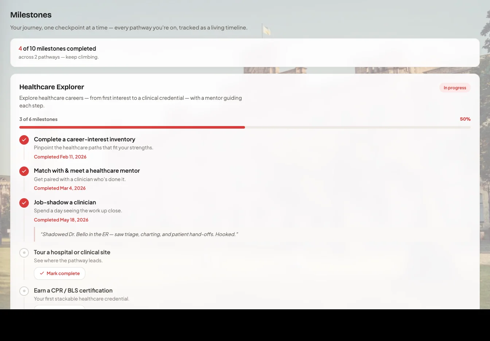
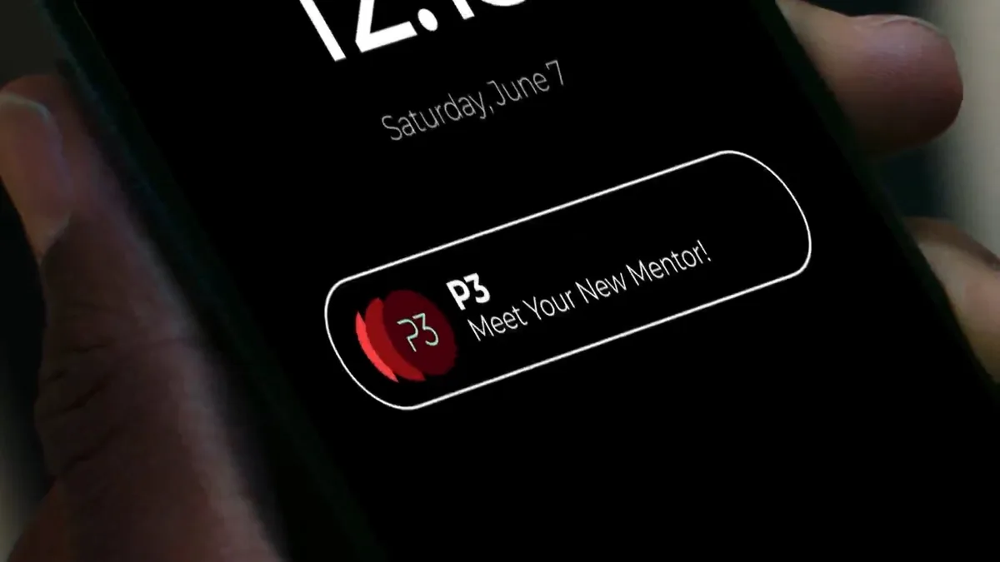
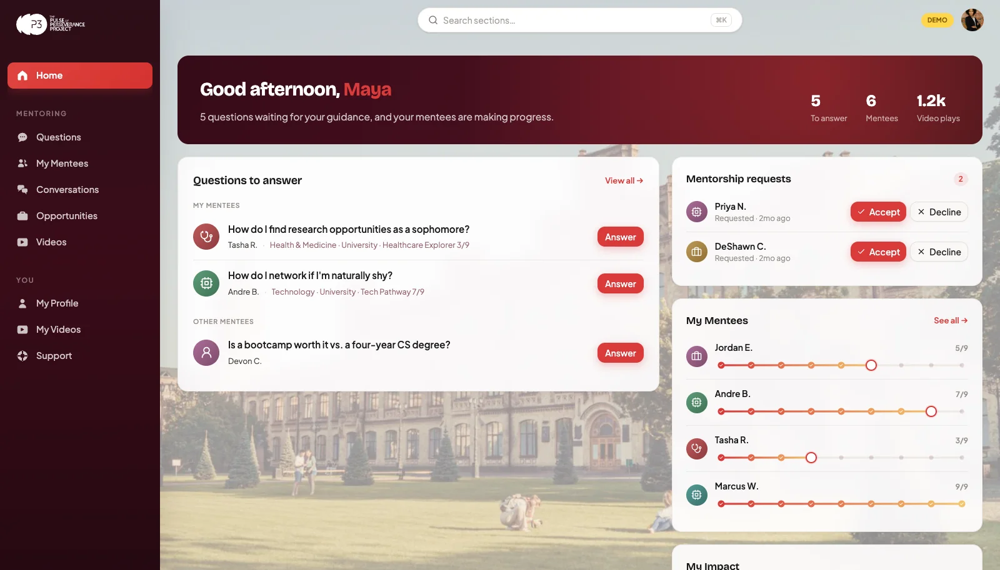
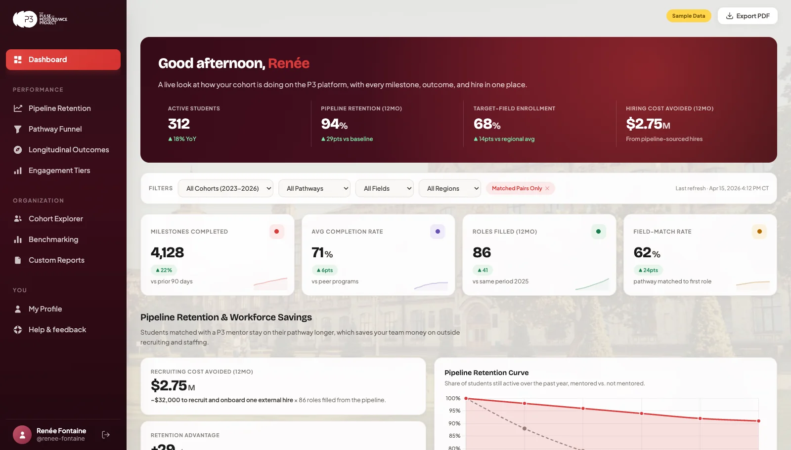

Get the App
Get the App
Everything you love in the P3 app: your mentor, your questions, your milestones, plus the tools that needed a bigger screen. Same account. New to P3? Register in the app →

The web app is where the deep work happens — writing, planning, and building your path with your mentor beside you.
Found an article that changed how you think? Send it. Have a quick note that doesn't need a video answer? Share it. Conversations is a private, asynchronous space between you and your mentor, only on the web.

Your mentor answers when they're next on P3. Pulse answers now. It knows your profile, your goals, and your questions, and it replies with real, curated links.

Three tools that turn self-discovery into a document you can act on: discover pathways that fit you, get your résumé reviewed in seconds, and build the career timeline that tells your story.

Milestone pathways were made to be seen whole. On the web, your entire journey, every checkpoint from first campus visit to first job, lives on a single screen, side by side with the timeline you're building.

Sign in with the account you created in the app — your mentors, questions, videos, and opportunities are already there.
Scholarships, internships, and jobs — with AI picks on why each one fits you.
Mentor answers and career stories in a full-screen portrait player.

Browse the mentor community, follow the ones you like, and request a match.

Between meetings, on a real keyboard, see every question waiting for you, check in on each mentee's milestone progress, and post opportunities to the whole community.
One click opens a full working preview with sample data. Nothing to install, nothing to sign up for.
Try the DemoThe app goes where you go. The web goes deep.
It's one platform, kept in sync. Ask a question on your phone at lunch — the answer is waiting on the web when you sit down to work.
Partner institutions get a Client Dashboard on the same platform — cohort engagement, milestone progress, retention, and longitudinal outcomes, in real time. Preview it today from the sign-in screen.
Learn More
The web app runs on the same platform as the app — every mentor is vetted, onboarded, and manually approved by P3.
AI features are for members 18 and older, and every Conversations message is safety-screened before delivery.
No downloads, no extensions, no payment info — open the link in any browser and you're in.